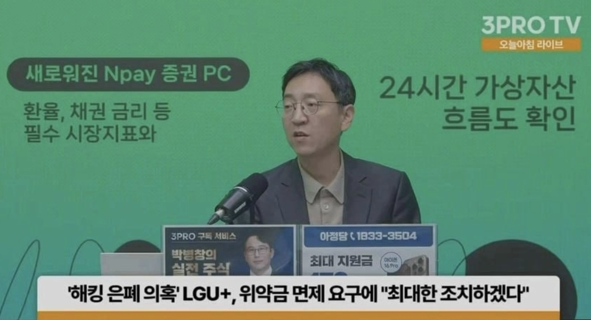

삼프로 유플러스 해킹 세줄 요약
1. 작년에 LGU+ 해킹 당하고도 은폐해서 공무집행방해로 경찰수사 중
2. 최근 금융권 해킹도 당했는데 해킹 당했을 때 은폐가 답이란 신호를 주면 안됨
3. 징벌적으로 위약금 면제 해야됨

삼프로 유플러스 해킹 세줄 요약
1. 작년에 LGU+ 해킹 당하고도 은폐해서 공무집행방해로 경찰수사 중
2. 최근 금융권 해킹도 당했는데 해킹 당했을 때 은폐가 답이란 신호를 주면 안됨
3. 징벌적으로 위약금 면제 해야됨
오 유플러스는 벌같은거 안받나보네 ㅋ
할꺼면 빨리하던가 뭔 해킹은 몇달 전에 났는데 지금와서 위약금 면제냐 ㅅㅂ
ㅋㅋㅋㅋㅋㅋ빨리 해야함 ㅠ
나도 빨리 탈출하게 해달라고 ㅅㅄㅂ ㅠㅠ
나두야 ㅠㅠ
아이폰 18pro가고파 ㅠ
KT에서 위약금 없이 탈출해서 엘지 왔는데 또 터지네 ㅅㅂ ㅠㅠ
개꿀인거 아님? 이번에 또 탈출 가능하자나
그냥 먼가 찝찝함 ㅠ
쇼생크 탈출이야 뭐야~~
지금빨리 유플가입해서 면제되면 알뜰로 갈아타자~
위약금 면제가 뭔 징벌적인거냐 당연한거지 ㅅㅂ
S26 울트라 살 때 약정으로 샀는데 그럼 이것도 위약금 없이 탈출 가능한거야?
개인정보가 그냥 누더기가 되었네 이제.
이미 갈아탔는데 받을수 있냐
Skt는 바로 얘기해서 처맞았는데
Lg는 본보기로 처벌해야함
늙은 윗대가리들이 너무 많으니 개인 정보에 대한 중요성을 인지조차 못하고 있음 위약금 면제로 끝날게 아니라 피해 보상으로 회사 휘청이게 만들어야 부랴부랴 대응하는 척이라도 할듯